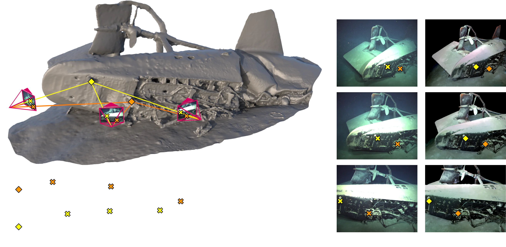

Underwater images are altered by the physical characteristics of the medium through which light rays pass before reaching the optical sensor. Scattering and wavelength-dependent absorption significantly modify the captured colors depending on the distance of observed elements to the image plane. In this paper, we aim to recover an image of the scene as if the water had no effect on light propagation. We introduce SUCRe, a novel method that exploits the scene's 3D structure for underwater color restoration. By following points in multiple images and tracking their intensities at different distances to the sensor, we constrain the optimization of the parameters in an underwater image formation model and retrieve unattenuated pixel intensities. We conduct extensive quantitative and qualitative analyses of our approach in a variety of scenarios ranging from natural light to deep-sea environments using three underwater datasets acquired from real-world scenarios and one synthetic dataset. We also compare the performance of the proposed approach with that of a wide range of existing state-of-the-art methods. The results demonstrate a consistent benefit of exploiting multiple views across a spectrum of objective metrics.
We use camera poses, intrinsics and depth maps resulting from SfM/MVS to pair geometrically pixels between different views. We project pixels from one view to another, enabling us to pair points in low contrast areas. By tracking pixel intensities at different observation distances, we can simultaneously estimate their corrected color along with the parameters of an underwater image formation model.
If you use parts of our code, please consider citing our paper.
@inproceedings{boittiaux2024sucre,
title={SUCRe: Leveraging Scene Structure for Underwater Color Restoration},
author={Boittiaux, Cl\'ementin and Marxer, Ricard and Dune, Claire and Arnaubec, Aur\'elien and Ferrera, Maxime and Hugel, Vincent},
booktitle={3DV},
year={2024},
}
This page uses ACE's template, particles.js library, and 3D Gaussian Splatting script.